Рутинные операции ИП (ежемесячно) с использованием infakt.pl¶
Данный документ описывает типичные операции ИП-шника на ryczałt в программе infakt.pl. Минимальная настройка infakt описана здесь.
Зарегистрируйтесь в infakt по нашей ссылке и получите 10% скидку на первую оплату.
- Выставление фактур
- Оплата налогов
- Составление декларации ZUS DRA и оплата взносов в ZUS
- Получение оплаты и учет курсовых разниц
- Отправка декларации VAT
- Отправка декларации VAT-UE
Выставление фактур¶
В последний день месяца (если у вас с заказчиком договоренность на помесячную оплату), или по факту выполнения (отгрузки) работ необходимо сгенерировать и выставить фактуру заказчику. Для этого перейдите в раздел Przychody -> Faktury и нажать кнопку Nowa faktura (dawny rachunek).
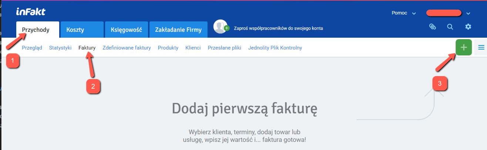
То же самое можно получить из списка контрагентов:
Przychody -> Klienci -> Nowa faktura
Для выбранного заказчика, либо из списка услуг:
Przychody -> Produkty, чекнуть нужную услугу, и выбрать Nowa faktura, выбираем Faktura VAT.
В новой фактуре выбираем/корректируем необходимые поля (если не выбрано):
- заказчика (из списка)
- дату оказания услуги (последний день месяца либо дату фактической услуги, если они нерегулярны)
- номер банковского счета (если больше одного)
- услугу
- количество "услуги" (если почасовая, то кол-во отработанных часов, если фиксированная ставка, то оставляем 1, так как сумма нетто уже есть ставка)
- ВНИМАНИЕ! Если вы освобождены от VAT (не являетесь czynnym плательщиком VAT), либо если вы выставляете фактуру на экспорт (в страну, отличную от Польши), то в самом низу нажмите кнопку "Uwagi: Dodaj" и добавьте следующий комментарий:
Reverse charge - VAT is charged to the buyer. Do rozliczenia podatku VAT zobowiązany jest nabywca usługi (odwrotne obciążenie).
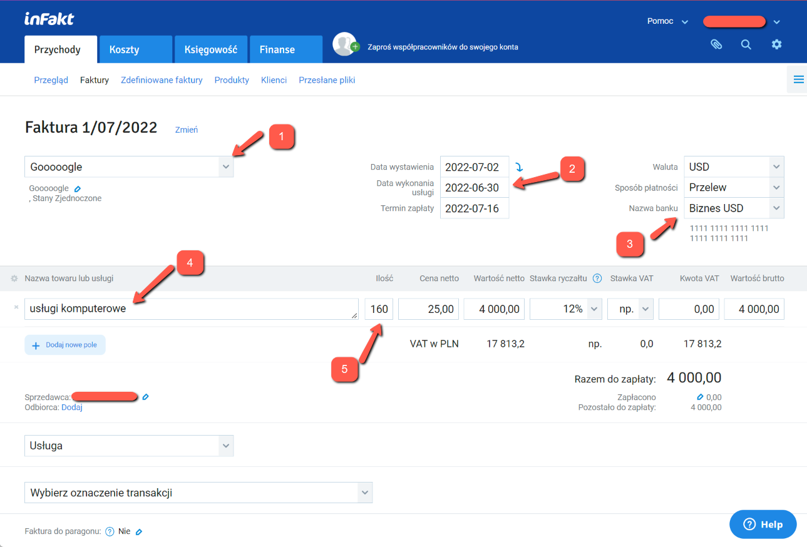
Нажимаете кнопку Zapisz fakturę для сохранения данных. Фактура записана!
Важно: На этом этапе фактура еще не участвует в расчете налоговой базы за выбранный месяц (пока она находится в статусе
SZKIC). Для того чтобы фактура попала в зачет, необходимо ее напечатать или выслать клиенту.
Для этого нужно в списке фактур выбрать нужную фактуру, и выбрать Drukuj либо Wyślij e-mailem. Правда в этом случае нет возможности выбрать язык фактуры (TODO: возможно какая-то настройка на это влияет).
Для возможности выбора языка фактуры надо открыть саму фактуру (щелкнув на нее), и оттуда выбрать Drukuj fakturę.
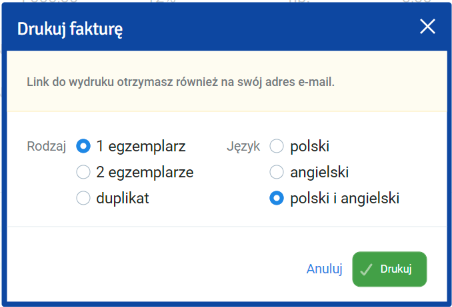
Ссылка на фактуру придет на почту и сама PDF откроется в новом окне.
После печати статус фактуры сменяется на WYDRUKOWANO и она начинает считаться в налог на следующий месяц и в ZUS.
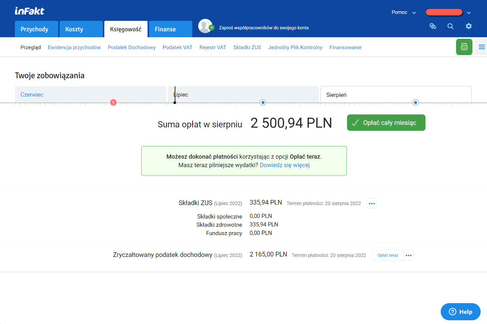
Оплата налогов¶
Убедитесь что все фактуры добавлены и в статусе
WYDRUKOWANOилиWYSŁANO, а так же все курсовые разницы за отчетный период внесены и учтены.
Узнать свой счет для уплаты налогов можно тут. Infakt получает номер счета автоматически при настройке.
Налог необходимо оплатить до 20го числа следующего месяца за отчетным. В infakt в разделе Księgowość -> Przegląd можно увидеть сумму для уплаты в текущем месяце исходя из выставленных фактур и внесенных курсовых разниц.
Есть два варианта оплаты:
- Вручную - из своего банковского приложения.
- С помощью infakt.
Вторая опция платная, стоимость зависит от суммы оплаты (что-то в районе 3-5 зл сам налог). Однако она самая простая и удобная, необходимо просто нажать Opłać z inFakt и подтвердить платеж в зависимости от способа оплаты.
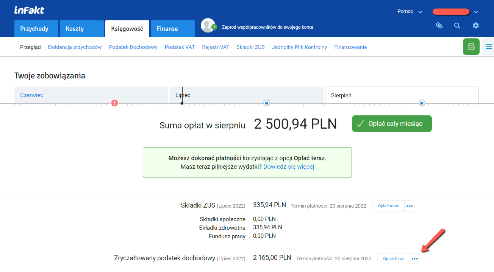
Оплата вручную происходит в банковском приложении.
На примере PKO: Выполните Przelew Podatkowy
- выберите секцию
Pozostałe - вводите в поиске
PPE - введите номер своего налогового счета
- введите за какой период оплачивается налог
- выберите в списке Typ identyfikatora
NIP - введите свой номер NIP
Выберите счет с которого хотите заплатить налог. Имеет смысл платить с фирмового, так как в банках движение по счету может быть условием бесплатности пакета, введите сумму платежа со страницы infakt и совершите платеж.
По окончанию отметьте в infakt налог как оплаченный.
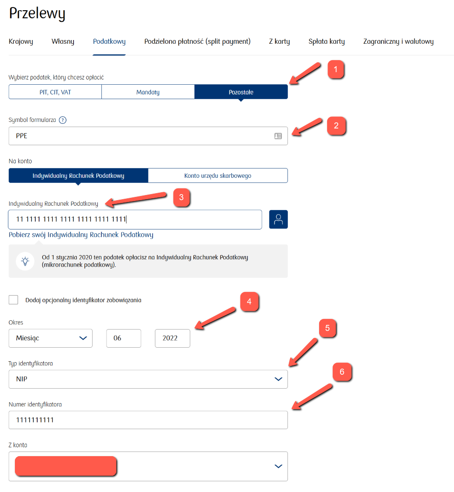
Составление декларации ZUS DRA и оплата взносов¶
Номер своего микро счета ZUS можно узнать на eskladka.pl. Настройка ZUS в inFakt описана тут.
До 20го числа каждого месяца (по состоянию на июль 2022) необходимо оплатить складку ZUS и отправить декларацию. Как и в случае с налогами, есть те же две опции для оплаты. Для платежей в ZUS комиссия infakt немного меньше (1-2 зл).
Для оплаты напрямую через приложение банка необходимо выполнить Przelew Krajowy, выбрать счет, с которого оплачивать (как писал выше, имеет смысл платить с фирмового):
- ввести получателя
- ввести номер своего микро счета ZUS
- Tytuł указать "SKLADKA ZUS 22M06" (пометить период, за который осуществляется платеж)
Ввести сумму со странички infakt и совершить платеж.
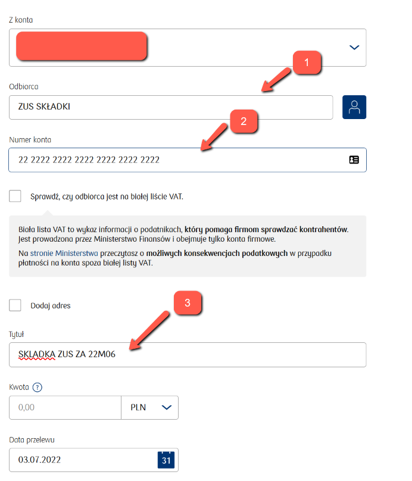
По окончанию отметьте складку как оплаченную.
Для генерации декларации файла ZUS DRA пройдите к нужной складке в списке складок (Przejdź do składki).
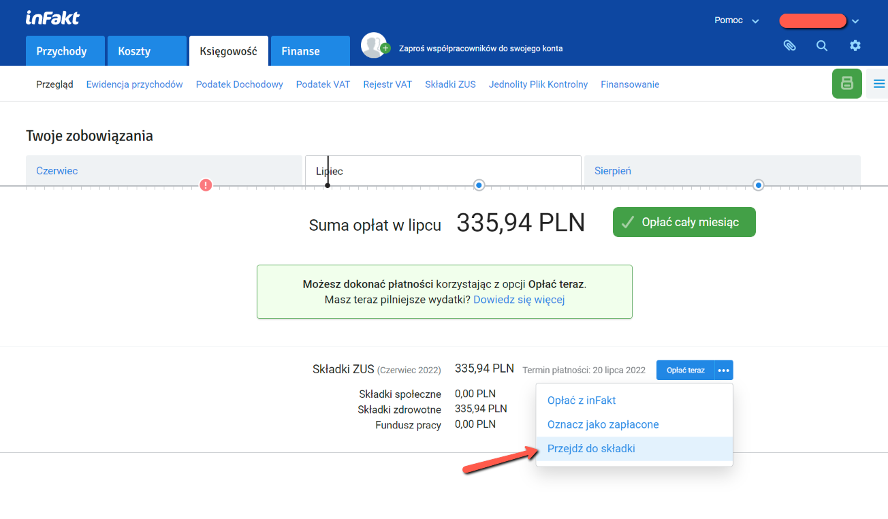
- Для истории имеет смысл прикрепить чек оплаты ZUS к записи в infakt (
Dodaj załącznik) - Нажмите
Pobierz ZUS DRAчтобы скачать файл DRA
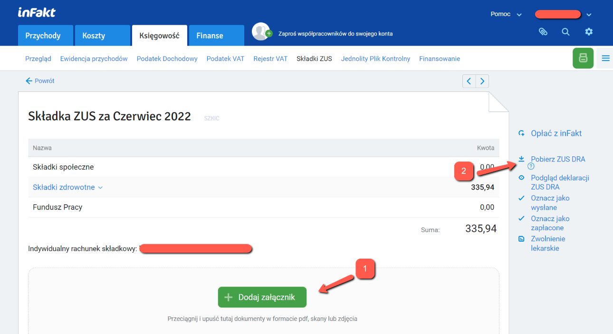
Скачанный файл можно импортировать на портале ZUS. Альтернативно, можно создать такую же декларацию руками, но импорт файла немного быстрее.
Для импорта файла нужно зайти на портал ZUS, перейти на закладку ePłatnik в раздел Dokumenty и там выбрать Import KEDU.

Проходим Dalej до шага 2 (Wybór pliku do importu i generacja dokumentów synchronizujących), нажимаем Wybierz plik...
и выберите скачанный файл, и переходим на шаг 3 (Utworzenie i walidacja dokumentów).
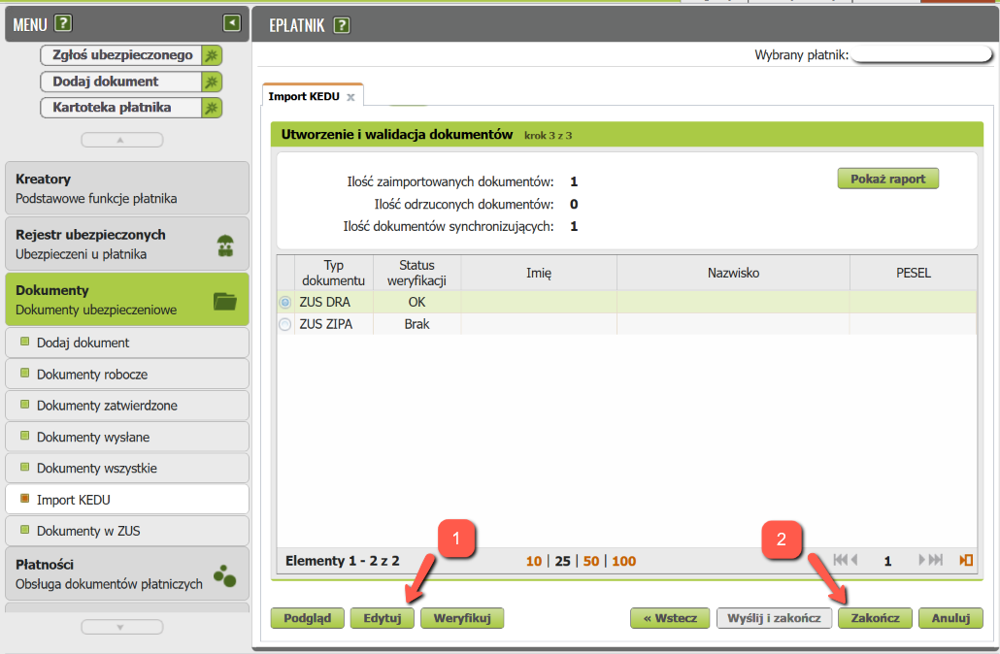
По какой-то причине кнопка Weryfikuj не обновляет статус документов и показывает ошибку, так что можно:
- выбрать DRA и нажать
Edytuj, в открывшемся окне нажатьSprawdźдля валидации и вывода отчета. Чаще всего всё будет хорошо и можно закрыть редактор без изменений. - нажать
Zakończчтобы сохранить документы в папкуDokumenty robocze.
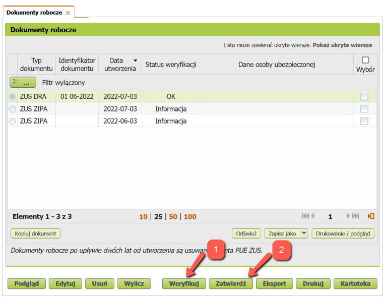
- Если по какой-то причине статут документа не OK - нажмите
Weryfikuj. - Если статус документа OK - нажмите
Zatwierdź.
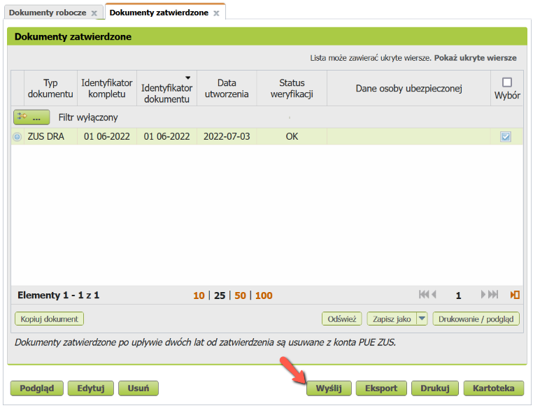
Нажимаем Wyślij, подписываем документ profilem zaufanym ePUAP и на этом все. Документ должен появиться
в папке Dokumenty wysłane.
Получение оплаты и учет курсовых разниц¶
При получении оплаты в иностранной валюте могут возникать курсовые разницы. Закон предписывает учитывать курсовые разницы. Учитывать ли только положительные разницы или и отрицательные тоже - мнения расходятся. Сам infakt советует вносить как положительную, так и отрицательную курсовую разницу. Тут стоит каждому для себя решить какие разницы учитывать.
Для учета курсовых разниц нужно знать курс (К1), по которому выставлена фактура, и курс нацбанка Польши (К2) на
последний рабочий день, предшествующий дате поступления оплаты. Если дата выставления фактуры отличается от даты продажи -
для (К1) берётся та дата, которая раньше. Если валюта с фирмового счета продается позже, то в
момент продажи валюты может возникать еще один курс (К3). Он, как и в случае с поступлением оплаты, считается на
предыдущий рабочий день от даты перевода или продажи. Перевод иностранной валюты с валютного счета JDG на личный
валютный счет не приводит к возникновению курсовой разницы, поскольку вывод этих средств не связан с предпринимательской
деятельностью. Вот тут и тут есть калькуляторы курсовых разниц, если лень самому считать.
Для внесения курсовой разницы (K2 != K1, или K3 != K2), необходимо добавить Dowód wewnętrzny. Для этого
перейдите в Przychody -> Faktury, и там:
- Кликните по "бургер-кнопке"
- Выберите
Dowód wewnętrzny
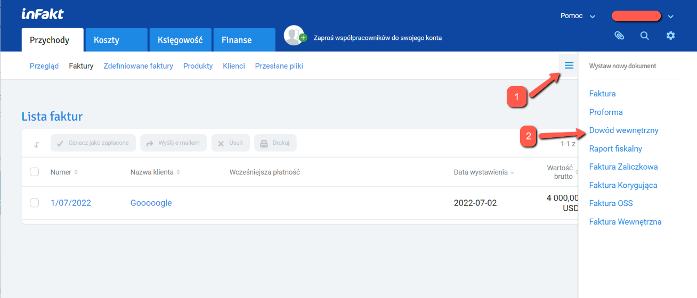
Тут выбираем:
Pozostałe przychody- вписываем
dodatnia różnica kursowaилиujemna różnica kursowaв зависимости от курсовой разницы - вводим сумму курсовой разницы (со знаком минус если она отрицательная)
- опционально можно добавить детали по курсам, которые считали
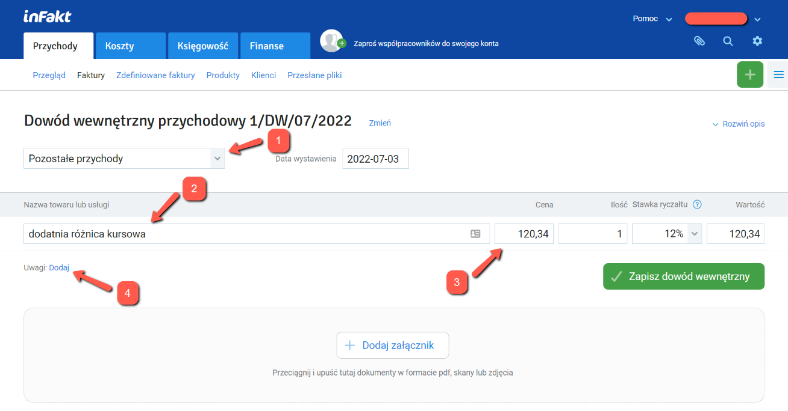
Записываем изменения и документ сразу начинает участвовать в расчете налоговой базы.
Отправка декларации VAT JPK_V7M¶
Предприниматель, зарегистрированный в белом списке как czynny плательщик ват обязан каждый месяц до 25 числа отправлять декларацию JPK_VAT за предыдущий месяц.
Перед отправкой убедитесь что вы внесли все затраты, с которых вы хотите списать VAT в кошты infakt. Также, убедитесь что все ваши фактуры учтены в расчете налогов, то есть вы их распечатали, отметили как оплаченные или выслали по email.
Теперь перейдите в меню księgowość -> Jednolity Plik Kontrolny и выберите месяц, за который вы хотите отправить декларацию.
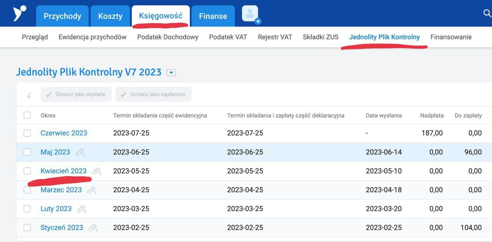
Убедитесь что сумма в декларации соответствует вашим ожиданиям.
Если у вас образовалась переплата по VAT и вы хотите вернуть ее на счет - то выберите в меню справа пункт Zwrot podatku и затем выберите подходящий вариант возврата VAT:
- 25 дней если выполнишь ряд условий, в т.ч. нужно минимум год быть czynnym плательщиком VAT.
- 60 дней можно выбрать если в отчетном месяце у вас были продажи и покупки с VAT.
- 180 дней если у вас не было продаж с VAT, но вы что-то покупали на фирму.
- Возврат на VAT счёт (за 25 дней). Не требует дополнительных условий. Деньги с VAT счёта можно потратить только на налоги и ZUS.
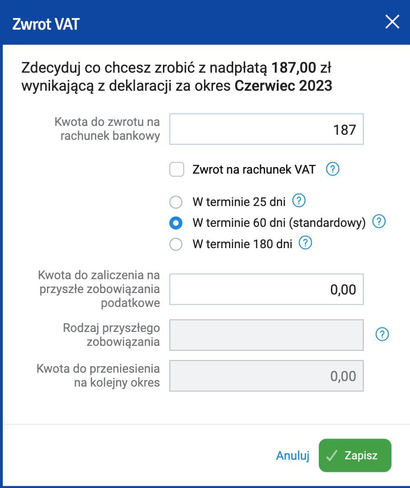
Если вы не хотите ждать возврата VAT месяцами вы можете зачесть VAT в счет другого налога. Например, PIT-28 для ryczałt.
- Перейдите в меню zwrot podatku
- Впишите сумму надплаты в поле Kwota do zaliczenia na przyszłe zobowiązania podatkowe.
- Впишите словами в счет какого налога вы хотите внести переплату VAT. Например: PIT-28 za kwiecień 2023.
- При оплате подоходного просто платите меньше на эту сумму.
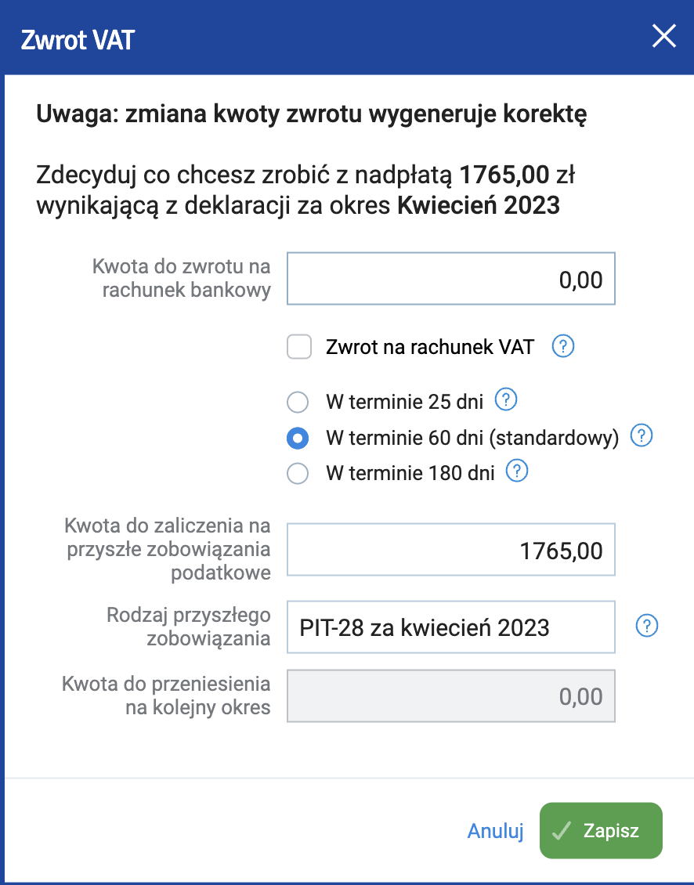
Нажмите zapisz.
Теперь можно выслать декларацию кнопкой Wyślij do urzędu.
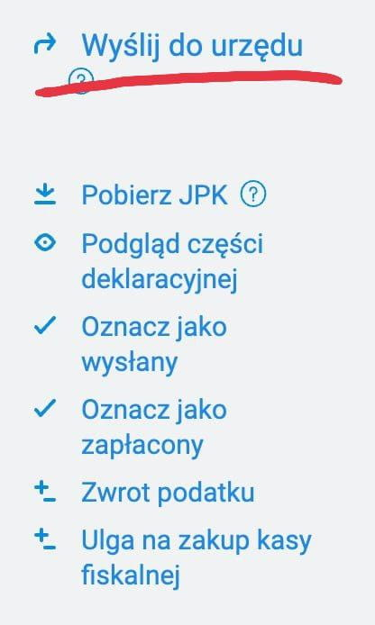
Верифицируйте декларацию профилем зауфаным или суммой налога за предыдущий год.
В скором времени вы получите UPO от налоговой.
Отправка декларации VAT-UE¶
Если вы зарегистрированы в реестре VAT-UE то вы обязаны каждый месяц до 25 числа отправлять декларацию VAT-UE за предыдущий месяц. Однако, в отличие от JPK_VAT7, нет обязанности отправлять нулевые декларации VAT-UE если в отчетном периоде не было внутриевропейских операций.
Чтобы отправить декларацию VAT-UE перейдите в раздел księgowość -> Podatek VAT. Выберите нужный месяц, проверьте что нужные суммы подтянулись в декларацию из фактур и отправьте кнопкой Wyślij do urzędu.